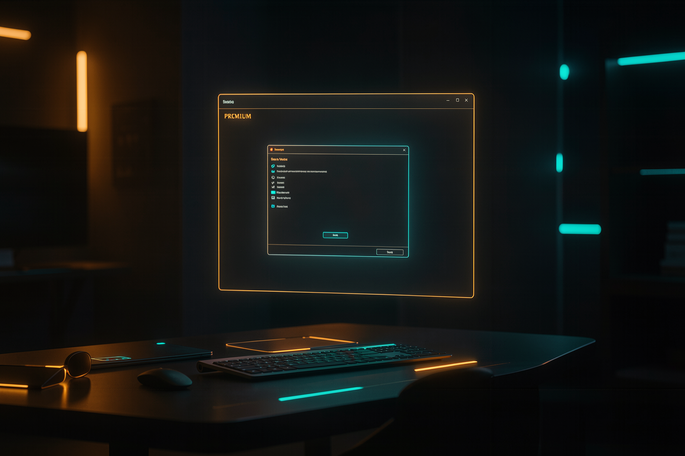

Curso INEMA.CLUB · 8 trilhas
Seu Funcionário Digital
7 dias para montar um assistente de IA que trabalha sozinho — do zero, sem saber programar.
Tema
Fonte
Tamanho do texto
Entrelinha
Acento (cor da trilha)
Público leigo 40+. Nunca programou? Sem problema — o curso define cada termo técnico na primeira vez que aparece.

Progresso do curso
As 8 trilhas
Do zero absoluto ao assistente executivo completo. Cada trilha entrega um projeto que roda de verdade.
Preparação: seu ambiente
Instale o Claude Code sem medo, monte a primeira pasta de projeto e escreva o CLAUDE.md que vira o cérebro de tudo que vem depois.
em breveO framework WAT
Workflow, Agent e Tools — a receita, o cozinheiro e os ingredientes. Construa sua primeira automação de newsletter rodando local.
em breveMCP: dando mãos ao agente
A tomada padronizada que dá ao agente acesso ao mundo real. Monte um scraper que entrega um CSV estruturado sozinho.
em breveSkills: ensinando um processo
O procedimento operacional padrão do seu agente. Escreva, teste e itere sua primeira skill própria.
em breveDeploy: sair do seu laptop
Código, repositório e nuvem. Publique uma automação agendada que roda mesmo com o computador desligado.
em breveInterfaces: o agente que enxerga
O laço de screenshot que leva o front-end de medíocre a quase profissional. Publique sua landing page de verdade.
em breveTempo: agendamento e loops
Tarefa agendada ou loop — duas ferramentas parecidas e profundamente diferentes. Monte a rotina matinal que melhora sozinha.
em breveCapstone: seu assistente executivo
Não é um build, é um projeto vivo em 4 fases: casa, vida, mãos e crescimento. A entrega final do curso inteiro.